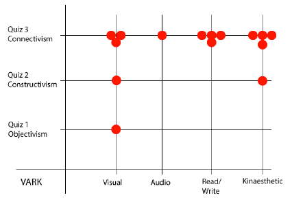

The research question is 'A critical analysis of e-learning epistemologies using the EBI and VARK frameworks.'
Following is a very condensed breakdown of the dissertation and the results.
Abstract
E-learning has developed into an intrinsic part of curricula at all levels in educational institutions, in industry and for self learning. This affects the approach to delivery of educational learning tools, whether through desktop computer or devices. The literature indicates that successful e-learning must be reflective of learning theory. There are several theories based on learning epistemologies, this research focuses on three. Firstly Objectivism, which specifies that the learner is a passive recipient of information and instruction. Secondly Constructivism, which encourages learning by doing while building on current knowledge. Thirdly Connectivism, which enables learners to collaborate as they learn while being exposed to a gateway of resources.
The application 'e-learning episodes' was developed with three separate sections to reflect the central tenets of each selected learning theory. The sections are presented as interactive quizzes in order to conduct a critical analysis amongst a study group of twelve. As an indication of how participants prefer to engage with learning, the Epistemic Belief Inventory (EBI) and the Visual Audio Read/Write Kinaesthetic (VARK) frameworks are used.
Questions about metrics associated to the usability of each epistemology enabled us to gauge participants' reactions to each quiz. The results indicate a preferred e-learning epistemology, and this preference is correlated to participants' EBI and VARK results. Participants were also eye tracked during testing so as to establish areas of most and least interest in each quiz interface. The results indicate that connectivism is the most preferred epistemology for 75% of participants. There is some disparity between this result and the EBI dimensions of participants who showed preference for it.
Web technologies allow for great innovation, and possibilities for learning, however there are high drop out rates among participants. This research indicates that content delivery needs to focus more on connectivism, which has appeal across the EBI and VARK scales.
Introduction
The adoption of different e-learning epistemologies when designing e-learning applications will result in designs that will support different ways of learning. If an epistemology is not considered the result will reflect what the designer assumes to be the correct approach and may not be conducive to learning.
This research will evaluate how learners with varied positions on the EBI and VARK scales approach an e-learning application that is reflecting three e-learning epistemologies.
Participants in the study will answer questions about previous e-learning experience. Reactions to interfaces reflective of e-learning theories will be recorded with questionnaires and eye tracking. Results will indicate preference for an e-learning theory, and will be correlated to participants' positions on the EBI and VARK scales.
Experimental Design
The four subjects that a participant may choose from are `Space', `Countries', `Cities' and `Biology', this is to try and avoid them being unhappy with the subject matter they were presented with for a quiz.
Following is a description of the epistemologies that were being tested.
Objectivism
The position of objectivism is that there is an objective reality and that the goal of learning is to understand this. The learner is the passive recipient of instruction, and the content is to be presented in a manner that is authoritative, correct, well organised and clear. Objectivism represents the traditional view of learning, where participants learn best in isolation with intensive subject matter. In order to reflect objectivism, Quiz 1 brings content to the learner in a straightforward factual format.
Quiz 1- Reflective of Objectivism
Constructivism
Constructivism represents the view that all learners are actively constructing meaning and knowledge from their experience, they are actively participating in the learning process, and that all knowledge is a dynamic human construct. A central point to constructivism is that learning depends on building on what the learner already knows or already can do; it is a goal orientated, active process. The learner should be exposed to activities such as engaging, reflecting, discussing, analysing, evaluating, elaborating, questioning and synthesising. The learner should be discovering things for themselves. He or she should be encouraged to take risks, experiment, and take responsibility for their actions.
Quiz 2 presents a challenge to the learner to rearrange the presented objects in what they think is the correct sequence. This activity reflects the constructivist view that learners should not be passively receiving information, but should be actively building on the knowledge they have in an interactive environment. Quiz 2 also has a notepad which saves notes taken on the fly.
Quiz 2 - Reflective of Constructivism
Connectivism
Connectivism is allowing users to collaborate as they learn, to develop, and understand multiple perspectives on an issue. The learner has the opportunity to measure their skills against those of others, and to question others' understanding. Connectivism can function as a gateway to resources. Key abilities for today's learners are to be able to recognise connections between ideas and concepts, to form connections between multiple sources of information and networks, and thereby create useful information patterns.
Quiz 3 has a ‘Class Forum' feature and also a small 'chat room' widget in the bottom right corner. There is a share button that connects the application to Pinterest, Facebook, Twitter, Google plus and email.
When Quiz 3 is complete the user finds a variety of pre-selected external links that are available for further study. A core skill is to create systems of networks that facilitate continual learning. As interest towards the subject grows, or if there is difficulty in completing the tasks, there is a button for 'Video & Audio'.

Quiz 3 - Reflective of Connectivism
Learning Styles
The EBI (Epistemic Belief Inventory) and VARK (Visual Audio Read/Write Kinaesthetic) frameworks can be seen as indicators of learning style and have been approached as such in this research. Epistemic beliefs are an individual's assumptions
about the nature of knowledge, and about appropriate ways to develop knowledge. They are individual convictions about knowledge and learning.
The VARK (Visual Audio Read/Write Kinaesthetic) questionnaire is used to help indicate a person's preference for taking in, and putting out information when learning is the objective.
Testing procedure
Each participant was told it would take a maximum of 30 minutes to complete the test in the NELL (National e-Learning Laboratory) lab in NCI. They were emailed the EBI and VARK questionnaires directly before testing, They were encouraged to speak as the test progressed.
Throughout the application navigation has been kept simple. Each quiz has a different approach to interface design, employing a repetition of concepts to encourage active participation. There is variance in technique, feedback, and organisation of content.
In Quiz 1, reflecting objectivism, we explore the reaction to being presented with straightforward questions. There is the option to read related content or to dive right in. A sense of a game is in place.
In Quiz 2, reflecting constructivism, the participant is presented with a task that involves building something. There is a higher level of interactivity. Drag and drop provides a means of trying things out and of constructing something that would be a correct answer or response. On completion a series of flip cards appear, which when clicked on enable a sequence of related facts to be visible.
In Quiz 3, reflecting connectivism, the participant is presented with a larger area of screen that involves scrolling when everything is open.
On completion of all of the quizzes, participants were asked to select a preferred quiz, and to rank all three in order of preference.
Results
The results indicate that the connectivist Quiz 3 is favoured by nine out of twelve participants, followed by the constructivist Quiz 2 and then the objectivist Quiz 1. Eye tracking data was collected with the use of the SMI software. It produced heat maps, scan paths, and gridded AOIs (Areas of Interest). This data enables us determine areas of most and least interest in the interface and insight into what design features work or didn't work.
Demographic Data
Current occupation Of the 12 participants: 8 are third level students. Of those who are working 1 is a Business Analyst, 1 is a Maintenance Technician, 1 is a Graphic Designer, and 1 is a Freelance Developer.
Level of education: 6 have a bachelors degree, 2 a masters degree, 3 a higher diploma, and 1 a diploma.
9 participants have used e-learning previously, and 3 have not. 9 participants are male, and 3 female. With an equal amount of 6 in the age ranges of 26-35 and 36-45 years old.
EBI Results
EBI results with the preferred quiz. The results describe a variety of dominant dimensions of epistemic belief, which are correlated to the preferred learning epistemologies in this graphic. There is slight bias in the results given that there is not an exact equal representation for each epistemic belief across the participants.
EBI Results with the preferred quiz
VARK Results
On the VARK scale participants were predominantly within the preference of `visual'
and `kinaesthetic' with four for each. The remaining participants were a combination of two preferences, these are termed ‘multimodal’ when there is no standout preference above the others.

VARK results mapped to the referred quiz
Quiz 1
Participants considered Quiz 1 to be the easiest quiz to use. Those who found Quiz 1 good for learning were with 'ability is fixed' and 'knowledge is simple' on the EBI. The scan path here illustrates a clear picture of the levels of concentration. The red diamonds are clicks.
Scan path of participant using Quiz 1
Quiz 2
It scored higher for motivating and stimulating than Quiz 1. Positioning elements correctly was the goal but the related facts were only read by some participants, more often those with `knowledge is simple' on the EBI. The drag and drop feature was interesting for all participants however it also produced varying degrees of frustration. It was felt there were too many opportunities to get it wrong, that it became too easy to do by simply trying again and again. Those with `knowledge is simple' on the EBI deemed Quiz 2 not too good for learning.
With the scan path here we see the amount of drag and drop required. The participant took note of the instruction to 'arrange the solar system', barely noticed the score, spent roughly equal time on each element and dwelled on the facts to the left as they appeared.
Scan path of participant using Quiz 2
Quiz 3
Participants found Quiz 3 to be most preferred. It scored highly for those with 'omniscient authority' and 'ability is fixed' on the EBI, and those with `visual' and 'kinaesthetic' on the VARK. Participants remarked they felt successful at it. However it was noted by many that the need to scroll vertically in order to place elements in position was a nuisance and distraction.
Looking at the heat map here we see that the video viewport was interacted with, that all the videos were clicked through, that only the first podcast was tried out, and that the share button was engaged with. Also roughly an equal amount of time was spent with each element and 'fact' in the task to do.
Easy interaction with others was deemed very important for participants across all the EBI dimensions and VARK preferences. The chat room widget was thought to be useful for learning through collaboration, especially by those with ‘kinaesthetic' or `read/write' VARK preference. The class forum was deemed even more useful for learning. When asked if they would prefer to learn interactively with others than alone, responses were mixed with a few responding they would prefer alone.
Participants said they were likely to read the external links' information that arrived at the end. Participants varied in how they would respond to further researching a topic saying that it depends on the subject, and whether it's required to do.
Watching the videos provided was deemed to be a good feature only if they were short and engaging. The audio clips were thought to be less interesting, especially by those with a `kinaesthetic' VARK preference.
Heat map of participant using Quiz 3
Conclusions
No participants with an epistemic dimension of 'omniscient authority' preferred the objectivist epistemology (Quiz 1). This is surprising because this epistemic dimension favours direct instruction from the lecturer or teacher, and to not challenge sources of information.
Constructivism was favoured by those with the epistemic dimension of 'knowledge is simple'. Although it is surprising as the constructivist approach does encourage integration, and can work well with compartmentalisation as it enables the building and movement of knowledge. It was also favoured by those with the epistemic dimension of 'knowledge is certain' who tend to learn facts by heart and avoid ambiguity, which is again surprising as constructivism encourages exploration.
Those with epistemic dimensions of 'knowledge is simple' and 'knowledge is certain' had preference for constructivism. These EBI dimensions are thought to lend themselves well to objectivism. However we have found that participants who demonstrated these dimensions preferred the constructivist quiz, as well as the connectivist quiz. This may have been because they were also with VARK preferences of 'visual' and 'kinaesthetic' and they preferred the use of images, which were lacking in Quiz 1, together with the interactive drag and drop.
Participants with a belief in 'omniscient authority' preferred the connectivist epistemology. There is a disparity between this EBI dimension and epistemology preference. This may be due to imperfections with the EBI, or the testing environment which did not involve a large group of other learners participating in discussion or critique of the subject
through the forum or chat room. In that case the result may have been different. It may have been preferred because an environment with preselected and recommended videos, podcasts and external links may have appealed to those with a strong belief in 'omniscient authority’. Connectivism, may also help provide a supportive and social environment in which to learn and engage with materials.
Within a connectivist environment it could be planned so that learners who may not be as willing to challenge or explore as others be somehow encouraged to do so. But should it be more so the responsibility of the student to cater for their own experience rather than the lecturer? Participants in this study who had not used e-learning before, each preferred connectivism. This may be as it is close to a familiar online experience of interactivity with others.
Interacting with others in the learning setting, and having further relevant information directly available, was deemed a positive aspect even amongst participants who did not demonstrate the EBI dimensions which are typically associated with learning in this way. This may be due to imperfections with EBI or the design of this application. E-learning can be accomplished alone by an individual yet interactivity with others should be accounted for. Participants remarked that more instruction was required,
indicating that e-learning requires faultless structure and guidance.
Future studies
Future studies could be carried out with digital natives who it is proposed are thinking and processing information in fundamentally different ways than their predecessors, functioning best when they are networked, and thriving on instant gratification with frequent rewards. Because most educational institutions are now incorporating e-learning to some degree, the digital native group is important to study in detail.
Having e-learning on a device with a video camera, a phone, as well as many other social network applications may well see the aspects of connectivism being harnessed more predominantly. A specifcally for devices version of the application could be created for testing.
This analysis indicated some of the areas where there is large potential for e-learning. A course could possibly present a short test to establish learning style that could then deliver all content to suit. Therefore allowing the learner to arrive at a more personal environment for learning, which may have higher levels of motivation and engagement than otherwise.